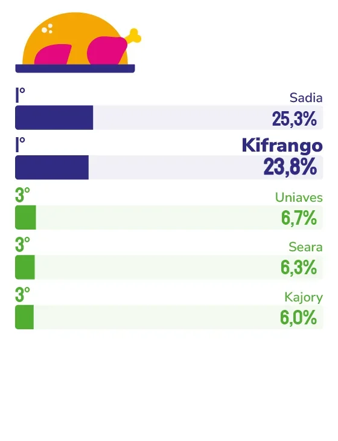

FRANGO
KIFRANGO
Aos 50 anos, a Kifrango conquista o topo do segmento de frango no Espírito Santo com controle total da cadeia produtiva, meio século de confiança e um vínculo afetivo com o consumidor capixaba que nenhuma marca de fora consegue construir.
Cinquenta anos é tempo suficiente para uma marca se tornar hábito. Para a Kifrango, esse tempo foi suficiente para se tornar algo mais difícil ainda: referência espontânea do consumidor capixaba em um segmento dominado por gigantes nacionais.
Para o diretor-superintendente da Kifrango, Elder Marim, esse resultado não surpreende quem conhece a empresa por dentro. “A lembrança espontânea não é construída da noite para o dia. Ela é resultado de experiências positivas acumuladas ao longo do tempo. Quando uma pessoa encontra o produto com facilidade, confia na qualidade, tem uma boa experiência de consumo e percebe consistência na entrega da marca, essa relação se fortalece naturalmente.”
O que sustenta essa consistência é um modelo produtivo que a Kifrango foi construindo peça por peça ao longo das décadas. A empresa controla toda a cadeia: da fábrica de ração própria ao incubatório inaugurado mais recentemente, passando pelos produtores integrados espalhados pelo Espírito Santo, até a chegada do produto ao ponto de venda. Esse domínio do processo inteiro é o que garante a qualidade consistente que o consumidor encontra toda vez que escolhe a marca, e que, repetida por décadas, transforma escolha em fidelidade.
Mas a Kifrango entende que vínculo com o consumidor não se constrói só dentro da fábrica. “Investimos continuamente em qualidade, bem-estar animal, sustentabilidade, tecnologia e segurança alimentar. Também mantemos uma forte conexão com o Espírito Santo, valorizando os produtores integrados, gerando empregos e contribuindo para o desenvolvimento regional”, diz o diretor. Ser capixaba, nesse contexto, não é apenas uma origem, mas sim uma escolha estratégica renovada a cada ciclo produtivo.
O mercado que a Kifrango enfrenta hoje é mais exigente do que em qualquer outro momento de sua história. O consumidor quer praticidade, transparência, responsabilidade ambiental e não abre mão do sabor. A empresa responde a esse cenário com inovação na linha de produtos e com lançamentos previstos para o segundo semestre de 2026, ampliando um portfólio que já combina tradição com soluções para o consumidor contemporâneo.
O ano de 2026 carrega um peso simbólico extra: são 50 anos de uma empresa que nasceu capixaba, cresceu capixaba e segue, em seu jubileu de ouro, como um dos nomes mais lembrados do Espírito Santo. “Em 2026, celebramos 50 anos de história, e esse reconhecimento ganha um significado ainda mais especial, pois simboliza uma trajetória construída por colaboradores, parceiros, produtores integrados e consumidores que acreditam na marca Kifrango há décadas”, afirma Marim.
Sobre o que vem pela frente, o diretor tem clareza do que pode mudar e do que não pode. Tecnologia, processos, portfólio, tudo isso vai evoluir. Mas, segundo ele, os valores que fizeram a empresa chegar até aqui não estão em discussão. “As tecnologias mudam, os mercados evoluem e os hábitos de consumo se transformam, mas os valores que sustentam uma marca forte precisam permanecer os mesmos.”

Elder Marim
Diretor-superintendente da Kifrango
“Nosso relacionamento com os consumidores é baseado em um princípio simples: entregar qualidade de forma consistente, todos os dias. Esse compromisso está presente desde a criação das aves até a chegada do produto ao ponto de venda. Mais do que estratégias de comunicação, acreditamos em atitudes concretas.”
43
